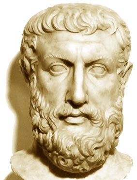

Παρμενίδης

Ο Παρμενίδης υποστήριξε ότι οι αισθήσεις μάς απατούν. Θεωρούσε ότι όλες οι πληροφορίες που μας παρέχουν αυτές είναι ψεύτικες και ότι οι εικόνες των πραγμάτων και των γεγονότων που σχηματίζουμε μέσω των αισθητηρίων οργάνων μας είναι απατηλές. Ο αισθητός κόσμος, όπως αποκαλείται το σύνολο των πραγμάτων και των γεγονότων που συλλαμβάνουμε με τις αισθήσεις μας, κυριαρχείται, όπως ισχυρίστηκε ο Ηράκλειτος, από την μεταβολή. Έτσι ο αισθητός κόσμος, ως διαρκώς μεταβαλλόμενος, δεν μπορεί ποτέ να αποτελέσει αντικείμενο έγκυρης γνώσης ούτε είναι δυνατό να πούμε τίποτε γι' αυτόν με βεβαιότητα.
Η σταθερότητα, που, όπως είδαμε παραπάνω, αποτελεί την αναγκαία προϋπόθεση, προκειμένου να γνωρίσουμε την πραγματικότητα και να αποφανθούμε γι' αυτή, δε θα πρέπει να αναζητηθεί στις πληροφορίες που μας προσφέρουν οι αισθήσεις μας. Θα πρέπει για το σκοπό αυτό να ψάξουμε μέσα στη σκέψη μας.
Ο Παρμενίδης δε διστάζει να ταυτίσει τελικά την πραγματικότητα με τη σκέψη. "Εκείνο που σκεφτόμαστε και εκείνο που υπάρχει (το πραγματικό) είναι ένα και το αυτό". Αυτή είναι μια από τις πιο γνωστές φράσεις του Παρμενίδη που διασώθηκαν.